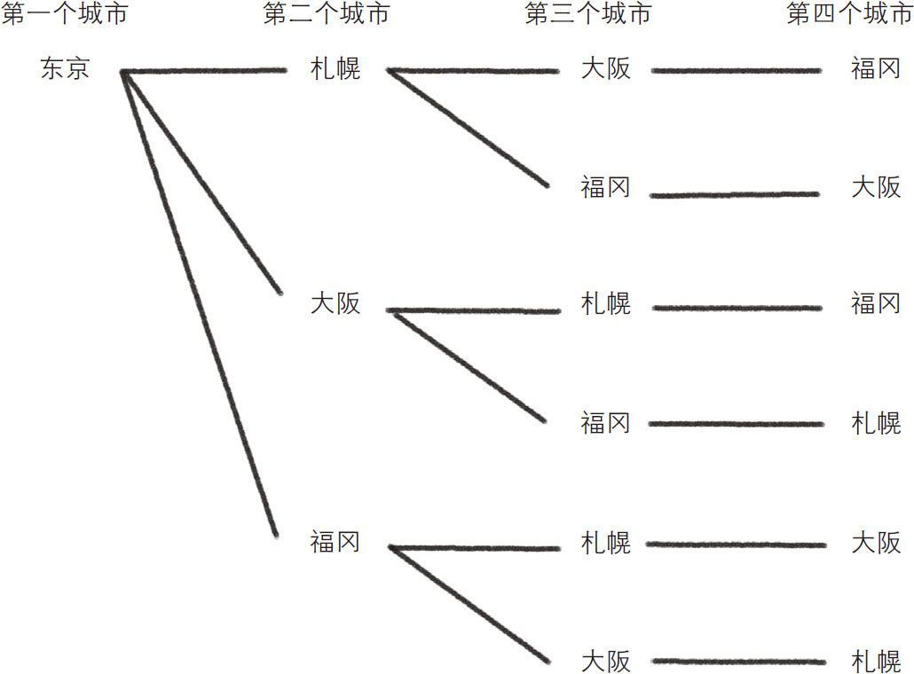

上班族中的销售人员在业绩上有着严格的指标，如一个月跑了几家企业、签下了几份合同等。领导会怎么对待他也和业绩密切相关。“黑色企业”一词最近出现在人们的视野中，全社会正呼吁这样的公司调整其过于残酷的工作环境。但是，目前在日本的某些地区，仍然有激动的上司在大声斥责部下。
下面我们来设想一个情景，假如冨岛是一家黑色企业的销售人员，某日加班结束后准备回家时，突然被营业部部长叫住：“从明天开始，你要去20个城市，将所有库存的商品全部销售出去，否则别回公司，也不能回家！并且，交通费自理。”对于要将全部工资上交给老婆的冨岛来说，他必须从自己的零花钱中挤出往来于这20个城市的交通费。
接下来，让我们一起帮冨岛思考一下，怎样才能花最少的钱跑完这20个城市？首先，为了将问题简单化，我们计算交通费与移动距离的比值。也就是说，我们不考虑同一段距离搭乘何种交通工具，只按照移动距离来计算交通费。因此问题就被简化为：为了最大限度地节省交通费，冨岛该怎么做，才能在跑完20个城市后，使得移动距离之和最短？这种用最短距离跑完多个城市的问题 被称为“旅行推销员问题 ”。
最直观的解决办法就是计算出各个走法的移动距离之和，然后从中挑选出最短线路。这样看来，我们首先要找到跑完20个城市的全部线路。如果通过地图一条线路一条线路地寻找，是非常浪费时间的。我们不妨用数学思维来简化这个问题，将思考的重心放在“抵达城市的顺序 ”上。
另外，20个城市在数量上过多，不容易思考，我们不妨将问题进一步简化为只跑札幌、东京、大阪、福冈4个城市。由于冨岛居住在东京，所以东京既是起点也是终点，那么第二个要去的城市就是除东京外的3个城市之一，第三个要去的城市就是其余的2个城市之一，而最后剩下的那个就是第四个要去的城市。
简单计算一下，以东京为起点，跑完4个城市的线路应该有：
到第二个城市的走法（3）×到第三个城市的走法（2）×到第四个城市的走法（1）＝6（条）.
如图3-9所示。

图3-9 以东京为起点，跑完4个城市的线路
如果仔细观察图3-9中的线路就会发现，“一共有6条线路”这个结论是有问题的。因为位于最上方的“东京—札幌—大阪—福冈”与位于最下方的“东京—福冈—大阪—札幌”是同一闭环线路，只是路径相反而已，属于重复路线。排除这些重复计算后，实际线路为6÷2＝3条。
将两式进行合并，则以东京为起点，跑完4个城市的线路共有（3×2×1）÷2＝3条。如果增加城市的个数，仍然可以计算总线路数。例如，要跑完6个城市的线路共有
（5×4×3×2×1）÷2＝60条.
与跑完4个城市相比，线路一下子增加了好多。另外，上述中的“5×4×…”写起来非常麻烦，有一个简单的符号可以帮我们解决这个问题。“5×4×3×2×1”可以表示为“5！”。也就是说，我们可以用“n ！”表示“从1到n 的所有正整数的积” ，这种表示法被称为阶乘 。
接下来，我们算一下跑完10个城市的线路共有多少条，计算过程如下：
9！÷2＝（9×8×7×6×5×4×3×2×1）÷2＝181440条.
从计算结果可以看出，共有18万余条线路。可见，稍微增加几个城市，线路数就会剧增。那么跑完20个城市的线路数共有：
19！÷2＝（19×18×…×2×1）÷2＝60822550204416000条.
经过计算发现，共有约6.08×1016 种走法！想必冨岛用手中的计算器是算不过来的，必须用高性能计算机才能计算出来。如果用一台能在一秒内进行1016 次计算的超级计算机来计算全部线路，大概只需6秒的时间，还能迅速找到最短的线路。而回到现实中，与其花费巨资去租借一台超级计算机，还不如随机选择一条线路。
最后的结局是，冨岛跑完了20个城市回到东京时，受到了营业部部长盛情款待。在为冨岛接风洗尘的酒会上，营业部部长说道：“冨岛辛苦了！下次，咱们要跑完30个城市……”
我们赶快来计算一下，跑完30个城市共有多少条线路，过程如下：
29！÷2＝4420880996869850977271808000000条.
经过计算发现，共有约4.4×1030 条线路，这可谓是一个天文数字。如果用超级计算机来计算所有线路，需要花费的时间为（29！÷2）÷1016 ≈442088099686985秒，也就是约1400万年。
如此看来，城市数量每增加一点，总线路数就会剧增。这种由于计算要素的增加造成计算结果剧增，从而导致计算困难的现象被称为“组合性爆发” 。一旦形成组合性爆发，想得出总线路数，根本是不可能的。所以我们只能放弃寻找最短线路的想法，用其他方法算出一条与之相近的线路 就可以了。其中的一个具有代表性的方法是“遗传算法 ”。
使用遗传算法，只需重复以下步骤，就可以找到一条与最短行程接近的线路：
1．随机生成若干条线路；
2．分别计算这几条线路的总距离；
3．从中选出几条距离相对较短的线路，再将这几条线路交叉组合，生成新线路；
4．重复执行步骤2和步骤3。
遗传算法的思想类似于农业品种的改良。例如，早期的胡萝卜颜色偏白、外观偏细长，看上去与树根没什么区别，味道也没有现在这么可口。后来经过人为的品种改良，选择胡萝卜中颜色更艳丽、外观更粗壮、味道更甜的个体进行多次培育，才有了我们今天的胡萝卜。
旅行推销员问题也可以用同样的方法进行“品种改良”，只不过，最终目的不是改良口感，而是要求出行程最短的线路。第一步随机生成的线路类似于原始胡萝卜，基本都是不讨人喜欢的（路程不够短），但是到第三步的时候，已经能找出相对较短的线路了，如果继续将各条较短的线路交叉组合，就能得到更短的线路。
打个比方，如果将相对较短的两条线路作为父母，让他们生子，那么子线路相当于由父母线路拼接而成的。就像一个孩子，眼睛长得像妈妈，嘴巴长得像爸爸，总会带有父母的某些特征。在此基础上，部分子线路会因为城市顺序发生改变而引发“突然变异”。在突然变异的线路中，可能会出现比父母线路更优秀（行程更短）的线路。这就像在自然界中，偶然出现的突变会产生具有新特性的个体，它们如果在自然选择中具有优势，就可能扩散，从而实现物种的进化。对最短线路的选择就是期待优化体出现的过程。
为什么从多个子线路中选出总距离相对较短的线路，并用同样的方法重复筛选，就可以得到更短的线路？这是由于除第一次选择的线路外，之后的线路都是短距离线路之间的组合，重复下去，自然会产生总距离越来越短的线路。因此，这种通过优秀后代进行品种改良（自然淘汰）的算法被称为遗传算法 。
遗传算法虽然只是随机选取了几条线路加以整合，但在有限的计算时间内，还是能得到理想的结果的。在很多情况下，这个算法都非常实用。
换个角度来思考，我们每个人的基因也可以说是通过遗传算法得到的还不错的结果。虽然不是“最强大脑”，也不会对疾病免疫，但一定是在生存竞争中胜出的那部分基因。所以，“马马虎虎”的人生也能好好过下去！